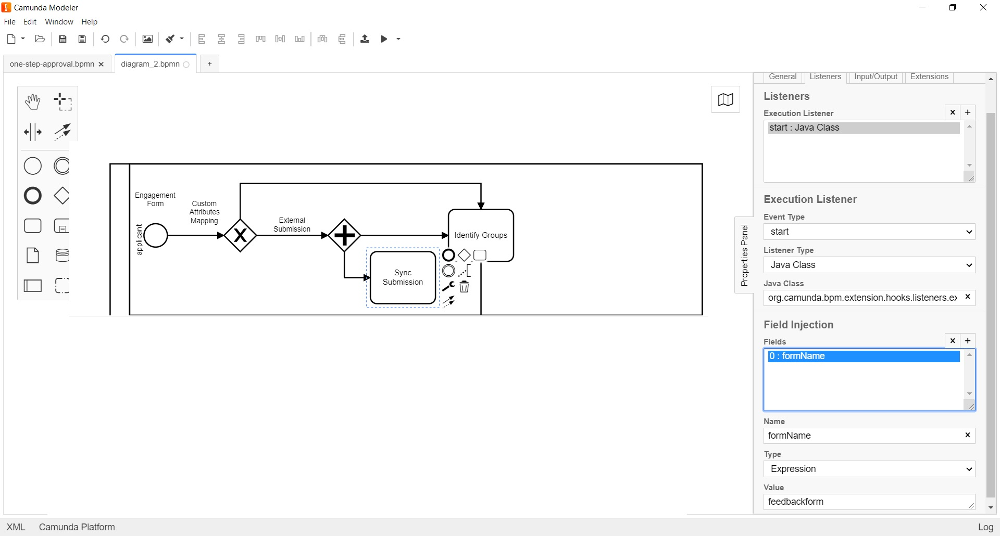

<article class="docs-article">
    <section class="docs-section" id="listeners">
        <div>
            <h2 id="external-submission-listener">External Submission Listener</h2>
            <p><strong>org.camunda.bpm.extension.hooks.listeners.execution.ExternalSubmissionListener</strong>
            </p>
            <p>This component can be used on the navigation path of start.<br>This allows direct
                integration from
                any external system and does offline sync-up within formsflow.ai i.e creates
                submission in formio.
            </p>
            <h3 id="table-of-content">Table of Content</h3>
            <ul>
                <li><a href="#type">Type</a></li>
                <li><a href="#how-it-works">How it Works</a></li>
                <li><a href="#how-to-use">How to Use</a></li>
            </ul>
            <h4 id="type">Type</h4>
            <p>Execution Listener</p>
            <h4 id="how-it-works">How it Works</h4>
            <p>This component relies on listed parameters.</p>
            <ul>
                <li>formName (Listener field) : Should be the form name from formio.
                    <code>Mandatory = Yes</code>;
                    to which the data has to be submitted offline.
                </li>
            </ul>
            <h4 id="how-to-use">How to Use</h4>
            <p>Below snapshot shows how to configure the <strong>ExternalSubmissionListener</strong>
                to an
                execution.</p>
            <p></p>
            <br><br>
            Click here <a href="Form Access Token Cache Listener.html">Form Access Token Cache
                Listener</a>
        </div>
        </section>
        </article>